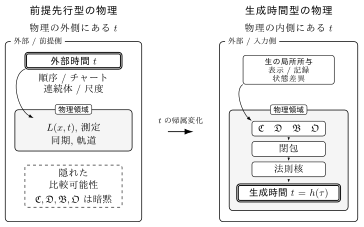
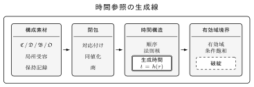

1 導入
1.1 問題設定
物理学は、慣用的な時間変数を用いて運動、変化、測定、法則を記述してきた。 しかし、その時間変数が使用可能であるために何が成立していなければならないかを、時間成立そのものの構成問題として分解してこなかった。 時計、記録、同期、座標、時空構造、観測手続は導入されてきたが、それらがどの条件のもとで一つの時間参照として成立するのかは、物理法則を書くための前提の側に置かれてきた。
古典力学の背景時間、特殊相対論の同期と慣性座標時刻、ミンコフスキー時空、一般相対論の動的時空は、それぞれ時間変数の使用可能性を別の形式で支えてきた[52, 23, 46, 24]。本稿は、これらの時間使用を、局所表示、記録、対象状態差異、情報結合位置から生成される時間参照成立条件として一つの生成線に置く。
この生成線を構成する本稿の理論を、時間参照の局所比較理論、すなわち the local-comparison theory of time reference と呼び、以下では略して LCTR と書く。
LCTRの論理構造は、計算機科学（CS）が体系化してきた型分離、入力・作用・出力境界、依存順序、監査状態、失効局在化、証拠来歴および変更影響を一体化する設計原理からなる。各時間内容の入力型、生成条件、後段使用条件、成立域、極小失効位置、修復対象および下流再生成範囲を同一の依存構造に置くことにより、この設計原理を物理時間の成立構造として数学化する。
古典的な世界記述では、対象の質量分布、重心、形状、モーメントなどは、必要に応じて物理量として追加される。一方で、それらの対象を同じ時間変数のもとに置けること自体は、すでに成立済みの背景として扱われる。そこでは、式の中に現れる時刻は、現実に何かが時刻づけられ、保持され、比較可能になる過程とは切り離され、理論が描く世界の側にあらかじめ備わっているものとして用いられる。
古典的記述と相対論的記述で時間の扱いが変わることは、しばしば対象のスケールや理論領域の違いとして理解されてきた。しかし、より根本にあるのは、物理理論が描く世界の中で、時間変数を使用できることがどの段階で成立済みとして置かれているかである。古典的なマクロ記述では、この成立条件が不要なのではなく、理想化された世界記述の内部にあらかじめ埋め込まれている。そのため、時間変数の使用可能性は問題として現れず、法則記述の背景へ退いている。
時間変数の使用可能性を成立済みとする理論では、理想化された前提のもとで法則と予測を与え、実験との適合を判定する一方、その前提が物理的実現のどこまで保たれ、どこで失われるかを、同じ理論の出力として記述しない。このため、不一致の原因は複数の説明へ分散し、理想化された法則と物理的実現の乖離が理論外に残る。
本稿は、この成立済みとして扱われてきた部分を理論内部へ移し、時間比較、運動記述、時間表現、連続近似の成立条件として定式化する。
1.2 構成対象と生成対象
本稿の構成対象は、物理理論が時間変数を用いて法則を書くために必要となる時間参照の成立条件である。局所で受け取られる時計側材料、保持される記録側材料、対象状態側材料、観測者側情報結合位置から、時間比較、時間表現、運動記述、法則に用いられる時間表現、連続近似の有効域に関わる成立条件を構成する。
各物理理論に固有の運動内容は、LCTRの生成・監査構成における理論別入力として保持される。本稿の生成対象は、その理論別入力が時間比較、時間表現、運動記述、法則に用いられる時間表現として成立するための条件である。
1.3 射程と生成対象
本稿の一般理論は、局所受容材料、記録側材料、対象状態側材料、観測者側情報結合位置を上位の入力分類として用い、それらを支える比較規則と実現材料を含む局所構成を対象とする。これらの材料から時間参照の成立条件を構成できる場合、その構成は本稿の射程に含まれる。
本稿の射程は、時間参照の成立条件、時間表現が使用可能となる有効域、条件失効時の失効位置を、同一の生成線上で記述することである。
1.4 中心命題と世界観対比
本稿の中心命題は、物理法則で用いられる慣用的な時間変数を、法則記述の原始前提から、局所で受け取られる表示、保持される記録、対象状態の差異、情報結合位置によって生成される法則許容表現へ移すことである。
本稿は、時間変数をあらかじめ与えない時間生成には四つの機能上の責任が必要であると提案し、それらを満たす構成によって法則に用いる時間変数を生成する。
従来の物理記述では、時間変数、連続時刻、座標時刻、周波数が、運動法則や測定記述を書くための前提側に置かれる。本稿は、その前提側に吸収されてきた成立条件を構成線上で分解し、比較閉包、正準比較商、観測者時間商、運動記述、法則許容時間表現、有効域、失効位置、原始前提失効条件へ接続する。
導入上の構成順序は、次の大枠で示される。
| 局所受容・記録・対象状態差異・情報結合位置 | |||
| 比較の閉包 | |||
| 時間表現と運動記述の接続 | |||
| 法則での時間変数使用 | |||
| 有効域と失効条件 |

この中心命題は、次の五主張として展開される。第一に、外部時間、外界全体順序、連続時刻、原始周波数値を出発点にせず、局所表示、記録、対象状態差異、観測者側情報結合位置から時間参照の成立課題を定式化する。第二に、比較段階閉包から正準比較商、厳密操作的時間構造、表現座標、比較アトラスが生成される条件を与える。第三に、運動記述操作可能性のもとで、観測者時間商、対象状態商、軌道関係、正準観測量族および法則許容時間表現が生成される条件を与える。さらに、選択された法則データが法則記述操作可能性を満たすとき、観測者時間法則核が生成されることを示す。第四に、時間参照、法則許容時間表現、物理法則の法則式に現れる時間変数使用の失効条件を、比較、表現、連続近似、運動記述、法則での使用、微分形式に関わる成立条件の失効位置および監査分岐として局在化する。第五に、代表的物理理論、量子重力的再構成、宇宙論的初期境界、極限重力領域、観測量問題、時間の矢、量子測定記録、ミクロ物理過程、時空創発、宇宙論的膨張史を、同じ生成線上の時間成立負担、有効域、失効位置、監査分岐の違いとして分類する。
この導入順序の差を、図1 に示す。左側は、時間変数、連続時刻、座標時刻、周波数を物理法則を書く前提側に置く図式である。右側は、局所表示、記録、対象状態差異、情報結合位置から時間参照の成立条件を構成する図式である。

図中の数式



図中の数式
1.5 非循環性と入力材料
本稿の構成は、時間変数、外部時間、外界全体順序、連続時刻、原始周波数値を入力として用いない。入力層に置かれるのは、局所で受け取られる表示、保持された材料、対象状態の差異、観測者側で束ねられる受容位置、ソース側の実現材料、局所比較規則である。これらは、後段で時間参照を成立させるための操作材料である。
入力形成では、これらの材料を、時間変数の成立前に利用可能な差異、保持、到着、比較の材料として扱う。サイクル添字やサイクル数差は、後段で時間表現が成立したときに、周波数、周期、Hz へ接続される計数材料である。保持された材料、対象状態の差異、到着写像も同様に、後段の構成を通じて時間参照の一部へ組み込まれる。
本稿は、入力層の操作材料と、後段で生成される時間表現を分ける。この分離により、計数、保持、差異、到着、比較を入力として用いながら、それらを最初から時刻、周期、周波数、時間発展、時刻写像として扱う循環を避ける。
1.6 なぜこの問題は見えにくかったか
この問題が見えにくかった理由は、時間変数を先に置く定式化のもとで、時間を前提として使っていることが、時計、記録、同期、座標、観測手続、時空構造を扱う各分野で背景化されてきたためである。時間を先に置く定式化では、時間の成立、時間の妥当性、時間の破綻は、運動法則を書くための前提条件側に吸収される。
古典力学では、慣用的な時間変数は運動方程式を記述するためのパラメータとして用いられる。相対論では、座標時と固有時、世界線間比較、同期手続が前景化する。量子論では観測結合と状態同定が前景化する。時間計量や GPS では、複数時計の調整、補正記録、比較結果の貼り合わせが前景化する。これらの定式化は、時間の表現、測定、同期、座標化、幾何化、観測との関係を扱ってきたが、時間参照そのものが成立する条件を一つの構成条件として定式化してはいない。
この未構成部は、時間をめぐる古典的定義にも残る。アリストテレスは『自然学』第四巻第十一章で、時間を変化そのものとはせず、しかも変化から分離せず、大きさ、変化および時間の連続性を前後へ接続し、二つの今の識別と計数を経て、時間を前後に関する変化の数と定義した[4]。これは、変化との差異、前後、今、知覚、区切り、計数および連続性を時間定義へ結びつけた歴史的到達であるが、前後、今、変化、知覚および数を時間生成前に用いており、それらを局所的な操作材料から生成する規則、記録保持、比較閉包、情報結合位置、法則許容時間表現、有効域および失効位置はなお構成されていない。
時間参照を成立させる必要を見えにくくしてきた要因は、ニュートン力学における背景時間、特殊相対論におけるアインシュタイン同期、ミンコフスキー時空、一般相対論的時空構造のそれぞれにおいて異なる形をとる[52, 23, 46, 24]。本稿は、これらの記述で前提とされてきた時間を、比較段階、表現段階、運動記述段階、法則表現段階の生成条件に基づく帰結へ移す。
相対論的計算の高精度な成功は、時計読取、同期手続、座標時、固有時、世界線間比較を、物理法則内部で安定して扱える対応構造として定着させた。この定着により、時間を前提として使っていることが、時空構造、同期規約、固有時表示、時計読取の各側面で背景化された。本稿は、これらの対応構造が前提とする時間参照を成立させる構成条件を、同一生成線上に配置する。
ファインマンは『ファインマン物理学』第一巻第五章で、時間に満足な定義を与えるという問題を取り上げ、自身を含む「私たち」が辞書的な意味ではおそらく定義できないものの一つが時間である、という事実に向き合うよう促している。そのうえで、物理学では時間をどのように測るかへ議論を移している[27]。この記述は、時間変数が物理法則の中で用いられながら、時間参照そのものの成立条件が定義対象として残されていたことを、きわめて率直に示す教科書的証言である。この率直な記述の後も、物理学は時間の未定義性そのものを構成問題として引き受ける方向には進まず、時間を前提として使っていることは、時計、同期、座標、時空構造、計量、観測手続きの各側面で背景化されたままであった。本稿は、そこで前提とされてきた時間の成立条件を、測定手続の前段にある構成問題として受け取り、局所表示、記録、対象状態差異、観測者側情報結合位置から、時間参照と法則許容時間表現が生成される条件として再構成する。
定義 1.1 (時間定義困難).
時間定義困難とは、物理法則が時間変数を用いる一方で、時間そのものの満足な定義が法則使用の根拠として与えられていない状態をいう。ファインマンの記述は、この状態を率直に示す教科書的証言である。時間定義困難のもとでは、時間を前提として使うことが、時計、測定、同期、座標時刻、固有時、時空構造、計量、観測手続を扱う各記述で背景化され、時間参照の成立条件は構成されないまま残る。本稿は、これらの成立条件を、物理法則に現れる時間変数の使用条件として構成対象にする。
LCTRは、この時間定義困難への回答を、時間の語義の追加ではなく、物理時間を使用できる成立条件の構成として与える。
慣用的な時間変数を先に置く順序は、時間参照の成立条件を法則記述の外側へ押し出す。その順序では、運動法則の性質はその時間変数の上で問われるが、時間変数そのものが使用可能になるための条件は前提条件側に残る。本稿は、この残された条件を、時間成立の構成問題として扱う。
本稿の歴史的意義は、慣用的な時間変数を物理法則の前提から帰結へ移す点にある。物理学は、時間を用いて運動、変化、測定、法則を記述してきたが、時間参照そのものが成立するための条件を、時間成立の構成材料へ分解してこなかった。本稿は、この外側に残されてきた部分を理論内部へ移し、時間変数の生成条件、時間使用の監査条件、原始前提失効条件を同じ理論線上に置く。時間変数の成立条件は物理法則の記述に先立つ共通前提であるため、それを前提から構成対象へ移すことは、物理学の記述の出発点を改める。その射程は、物理学を基礎とする自然科学全体と、物理法則を用いる科学・工学の記述基盤に及ぶ。従来個別の時間謎として扱われてきた諸問題は、未生成の時間変数を前提とするかぎりで謎として成立してきた。時間変数を物理法則の前提から生成の帰結へ移すことで、諸問題が謎として成立する基盤は失われ、諸問題は時間参照の成立条件、有効域、失効位置、監査報告対象へ再分類される。本稿は、古代の時間定義から現代の理論、実験、計量標準および工学資料までを含む監査72資料に現れる時間使用を、時間内容と成立根拠構造が法則使用に先行して生成されるかという共通基準で検証する。
1.7 既存理論との差異
既存理論において、時計同期、固有時、関係的時間、量子論的時間再構成、時間計量、操作主義は、それぞれ時間の測定、同期、幾何化、関係化、標準化、観測との接続を扱ってきた。これに対しLCTRは、それらを局所表示、記録、対象状態差異、情報結合位置から時間参照の成立条件を定める一つの構成問題として定式化し、時間変数を物理法則の前提から生成の帰結へ移す。
ここでいう既存理論には、操作主義、量子重力における時間問題、外部時間なしの量子論的時間記述、関係的観測量、時間計量標準が含まれる[12, 42, 39, 53, 62, 14]。本稿は、それらが担ってきた部分対象を、時間参照形成、法則許容時間表現、有効域、失効位置へ進む単一の生成線上に配置する。
ここでいう還元は、既存理論が扱ってきた時間使用を、各理論固有の運動内容をLCTRの生成・監査構成における理論別入力として保持したまま、時間変数が物理法則の前提から帰結へ移るための構成段階へ写すことである。各代表スキームでは、既存理論の運動内容、時間使用、成立条件、失効条件の対応が固定される。
1.8 主結果
本稿の主結果は五つである。
第一に、外部時間、外界全体順序、連続時刻、原始周波数値を出発点にせず、局所表示、記録、対象状態差異、観測者側情報結合位置から、時間参照の成立課題を定式化する。
第二に、比較段階閉包が、正準比較商、厳密操作的時間構造、局所チャート系、表現座標、比較アトラスを生成する条件であることを示す。この結果により、慣用的な時間パラメータは、生成済みの厳密操作的時間構造上の順序保存表現として確定する。
この生成により、何を同じ時間内容として扱えるか、何を前後として比較できるか、どの条件で一つの順序と数値表現を使用できるかが、時間変数の使用に先立って定まる。また、生成された時間構造の成立と、その座標表現の選択を分離する。
第三に、運動記述操作可能性が、観測者時間商、対象状態商、軌道関係、グラフ軌道、正準観測量族および法則許容時間表現を生成する条件であることを示す。さらに、選択された法則データが法則記述操作可能性を満たすとき、観測者時間法則核が生成される。この法則核の共通有効時間域上で、生成済みの時間表現を当該法則に用いる。
第四に、時間参照または法則許容時間表現が失効する場合を、比較、表現、連続近似、運動記述、法則での使用、微分形式に関わる成立条件の失効位置として局在化する。さらに、物理法則の法則式に現れる時間変数使用を、生成線上の成立条件と原始前提失効条件へ接続する監査分岐として扱う。これにより、時間変数使用が成立する範囲、その失効境界、および失効理由を、生成線上のどの成立条件がどこまで保たれ、どこで失われたかとして分類する。この分類は、理想化された法則と物理的実現の乖離を、時間変数使用の成立条件と失効位置から定まる理論出力へ移す。
この分類が連続と微分を使用できる条件を与え、微分方程式による記述が有効な場合と不精巧になる場合を、その条件の成立範囲と失効位置によって区別する。同じ条件と失効位置を理論記述と工学実装の双方に適用することで、両者を同じ監査線上に接続する。
LCTRは、古典的連続時間の成立上の位置を、法則記述の原始前提から、物理的成立条件が満たされる範囲で使用できる生成済み近似表現へ変更する。
各系列の各極小失効位置について、そこに属する条件または入力を特定し、その修復が成立する場合には、修復後の入力から下流成果を依存順に再生成または再計算する。当該条件が全領域で成立しない場合には、成果の使用域を条件が成立する領域へ制限する。これにより、連続と微分を含む既存形式について、使用資格、成立域、失効原因および修復順序を同じ監査出力として与える。
原始時間入力を成立済みの時間入力として受け入れると、その使用に必要な生成条件または成立条件は、法則使用前の生成・評価境界から背景へ退き得る。独立証拠により同じ条件の実失効が確定し、その失効位置から下流成果までの依存到達が成立する場合、当該成果はその評価領域で使用資格を失い、修復後の入力から再生成または再計算される。
物理担体、記録、通信、有限分解能および証拠来歴は、時間変数の成立域と失効位置を定める監査入力を構成する。したがって、時間変数を用いる理論の成立責任は、その物理的実現と使用可能範囲の提示を含む。
第五に、ニュートン力学、古典力学、特殊相対論、一般相対論、時間計量、GPS、量子重力的再構成、宇宙論的初期境界、極限重力領域、観測量問題、時間の矢、量子測定記録、ミクロ物理過程、時空創発、宇宙論的膨張史を、同じ生成線上の実現または接続領域へ還元する。この還元では、各理論の時間使用を、時間参照の成立条件、有効域、失効位置、監査分岐へ接続する。
さらに、時間次元を含む物理量または時間を用いて定義される物理量について、その物理関係をLCTRの生成・監査構成における理論別入力として保持し、必要な時間内容が生成された後の成立域で時間依存表現を使用する。この順序により、各量の定数性、不変性、率、寿命、線幅または周波数に関する主張の量化域を、時間内容の生成条件へ接続する。既存の物理関係をこの理論別入力として保持し、失効条件とその下流影響を局在化して修復または使用域制限を行う構成は、保持可能な既存成果の物理的成立根拠を原始時間前提から生成済みの成立根拠構造へ移す成果保存的再基礎化を与える。
特殊相対論と一般相対論の標準定式化が直接与える対象は、時計読取差、座標時刻差、世界線に沿う固有時間差、計量構造およびそれらの対応関係である[23, 46, 24]。一方、標準教科書および公的解説では、これらの差が、時間そのものが遅くなる、時間が伸縮する、または時計とともに物理過程全体が遅くなるという表現へ接続される[27, 68, 61, 47, 51, 26, 58]。これらの資料は、独立した時間実体の型、状態空間および変形法則を定義していないが、何が時間、固有時、時計、時間率または時空であるかを、時間参照構成より前に同定している。
これに対して本稿では、時間、固有時または時間率を原始的対象として先取りせず、局所的な操作材料から時間参照と法則許容時間表現を生成し、相対論的時計差を、複数の観測者または世界線に対応する生成済み法則許容時間表現間の比較差として確定する。したがって、既存理論が時間参照の成立条件と時間表現の生成規則を与えていない根本原因は、独立した時間実体を明示的に仮定することだけではなく、時間、固有時または時間率を、時間参照の構成に先立って同定していることにある。独立した時間実体の伸縮を文字どおりの物理機構として主張する場合には、その実体の型と同一性条件、状態空間、変形写像、変形量、発展則および時計差への観測対応がさらに必要であり、独立した時間実体を主張しない場合にも、生成済みの比較差を時間の伸縮と呼ぶことは、時間そのものの生成を与えない。
時間の不存在を述べる言明と、時間そのものに伸縮、遅速、流動または変形を帰属する言明については、両者が対象とする時間内容の型と適用域を一致させて判定する。同一の時間内容型と適用域を対象とする場合、存在を否定した対象に物理属性を帰属する二言明は両立しない。異なる対象または適用域を対象とする場合はその切替を明示しなければならず、時計指示差、時計率差、固有時差、座標差その他の関係量への切替から、物理担体と独立した「時間そのもの」の属性変化は導かれない。
時計、振動子、信号、記録その他の物理担体上で成立した比較差と、その比較差を物理担体から独立した時間自体の属性へ帰属する説明は、異なる対象と証拠をもつ。測定、予測、模型適合または数学的一貫性の成果は、その証拠が直接支持する対象、述語、条件および適用域で成立する。別の対象、述語、証拠型、成立条件または適用域へ成果を移す主張は、その移行を支持する独立証拠または妥当な導出を要する。
量子重力的再構成、宇宙論的初期境界、極限重力領域、観測量問題、時間の矢、量子測定記録、時空創発、宇宙論的膨張史については、外部時間なしの構成から、法則を担う時間表現が生成される条件を与え、その条件が失効する位置を生成線上に局在化する。
LCTRは、この統一された生成線により、局所固有時と物理法則全体を担う時間表現を区別し、ローレンツ変換を時間表現と空間表示の関係として扱う。さらに、時間の矢、時間の非存在または創発を述べる言明、および量子重力の時間問題を、時間内容の生成、表現、向きづけおよび法則内使用資格のうち、それぞれがどの成立課題を担うかによって区別する。
原始時間を前提とする構成は、法則に用いる時間変数を生成前に同定し、その物理的成立を説明対象の外へ置くため、未生成の時間量に依存せず、物理的材料と操作から法則記述に使用可能な時間表現を生成する責任を放棄する。 本稿は、監査72資料の時間使用をこの生成責任によって統一監査し、監査対象となる既存理論群がこの責任を充足しないことを示す。 この統一監査の資料横断結果は、次のとおりである。 完全判定では、全72資料において生成済み時間内容は0件であり、資料固有の時間内容はすべて原始時間根として残る。資料形式証拠環境を加えた局所到達判定でも、局所的到達が認められるのは10資料に限られ、いずれにも原始時間根が残る。残る62資料では、局所到達判定による到達時間内容も0件である。 本稿の構成は、局所的な物理材料から時間参照と法則許容時間表現を生成し、物理法則で用いる時間変数の生成責任を充足する。
本稿に付属する形式検証資産は、第2章から第6章までの数学的定義および全証明責務に対応するLeanとIsabelleの形式化、本文と両形式化の型・量化・前提・定義域・全結論・依存関係を成分別に対応づけた表、ならびに各体系の検証結果と、nanoda・con-lecheによるLean証明の再検査結果を収録する。法則候補関係の部分出力写像に対するMMT・OpenMath・Content MathMLによる機械可読表現、対象に応じたSMT・記号計算・単位と次元・反例と境界例の検査結果、および固定検証環境と再実行手順を付す。 各証明責務について、本文と両形式化の証明本体、使用定義、依存定理および局所前提を照合した結果を収録する。
1.9 論文構成
本稿は次の順序で進む。まず、物理法則で用いられる時間変数が成立するための条件を、時刻値担体、保持対象、比較操作、法則接続先、既使用依存箇所として分解する。次に、局所で利用できる物理的材料から、局所時間成立課題、四要件、基底役割型集合、局所操作成分、対象指定付き役割インスタンス束族を定める。その後、それらの役割を用いて、比較構成に必要な入力を形成する。続いて、局所比較の比較閉包条件を定め、その閉包から正準比較商、厳密操作的時間構造、表現座標、比較アトラスへ進む構成を与える。その後、比較から得られた対象を運動記述へ接続し、観測者時間商、対象状態商、軌道関係、正準観測量族、法則許容時間表現、観測者時間法則核を生成する条件を定式化する。さらに、その構成がどこまで有効か、どこで失効するかを分類し、有効域、失効境界、構造負担を監査可能な対象として整理する。最後に、代表的な物理理論、古典的な多対象記述、量子重力的再構成、宇宙論的初期境界、極限重力領域、観測量問題、時間の矢、量子測定記録、時空創発、宇宙論的膨張史を同じ生成線上に配置し、時間変数が物理法則の前提から生成済みの法則許容表現へ移るための成立条件と失効条件を確定する。